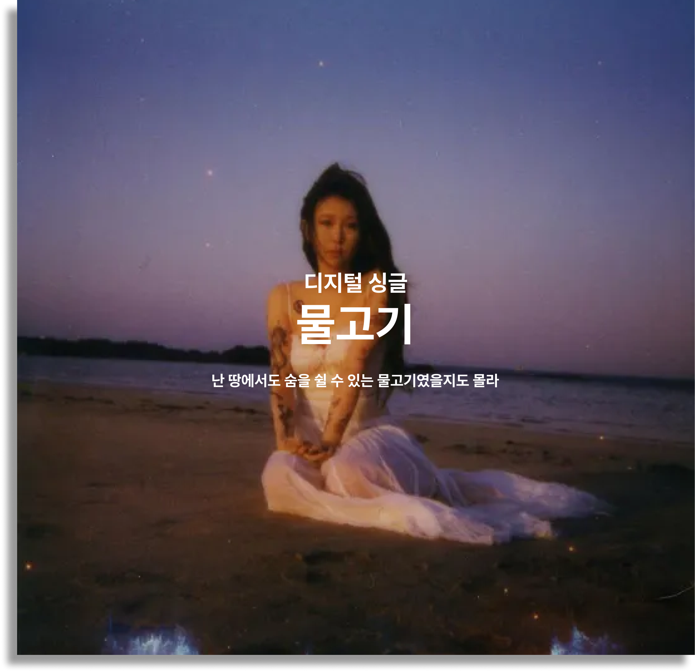
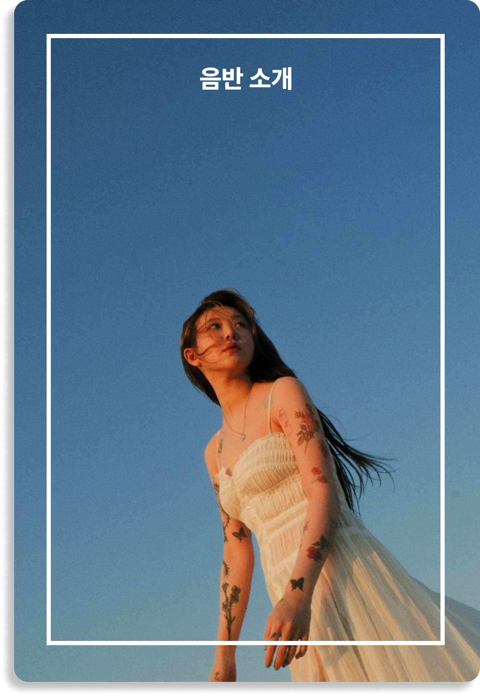
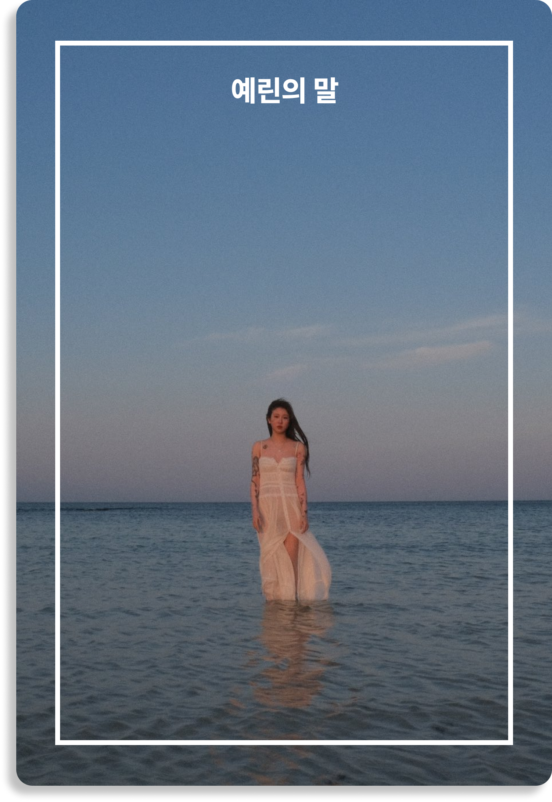
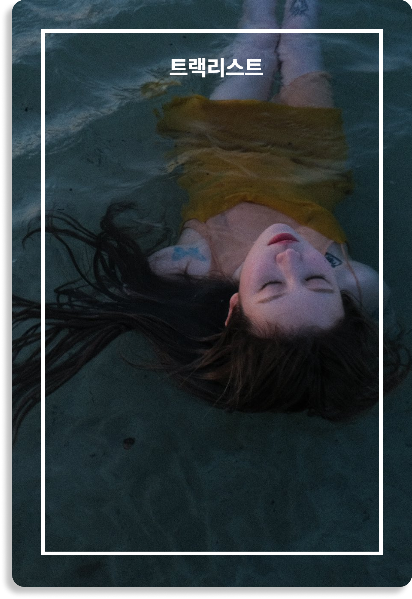
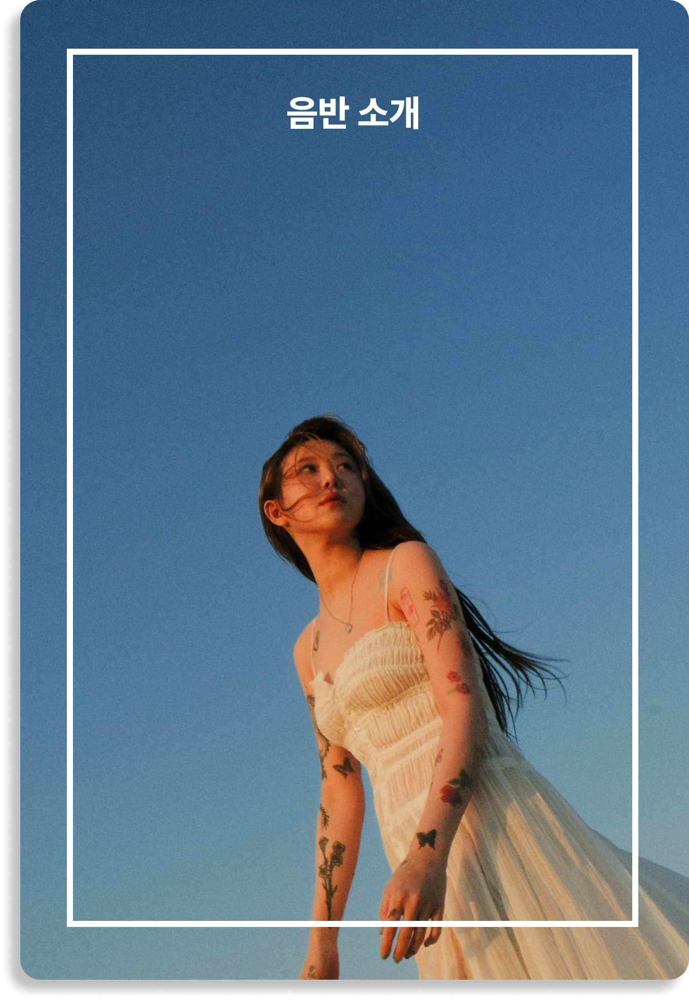
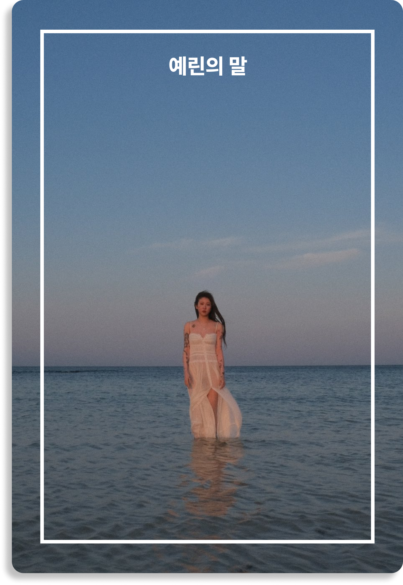
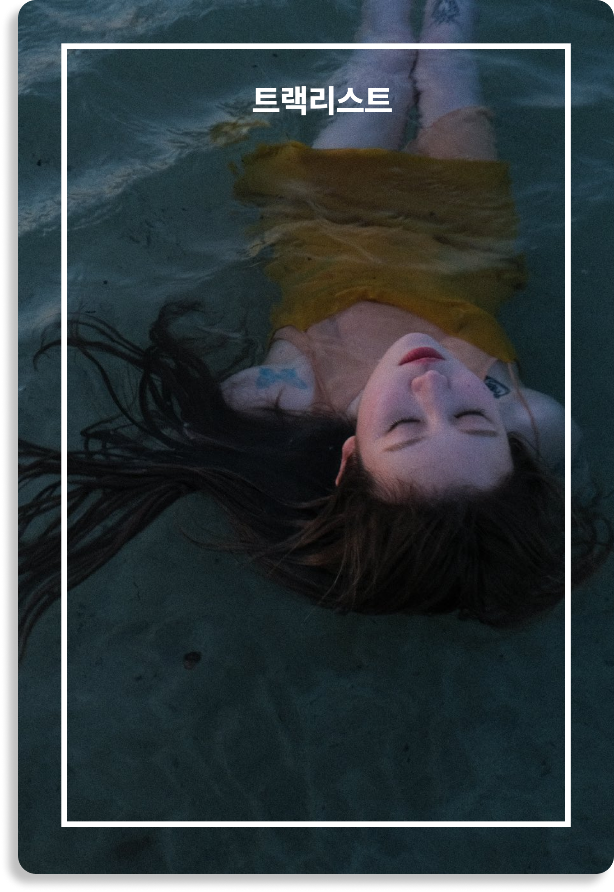

  
  
VINYL 물고기
지난 2019년 ‘Our love is great’ EP 앨범 이후 처음 발매하는 백예린의
오리지널 한글 앨범이자, 디지털 싱글로는 6년 만의 곡이다. ‘물고기’는
동명의 타이틀곡 ‘물고기’와 더불어 ‘그게 나였네’, ‘막내’를 포함해 총
3곡으로 구성되어 있다.
타이틀 ‘물고기’는 남들과는 조금 다른 자아, 그리고 그런 내 옆을 지키는
소중한 사람에게 전하는 메시지 담고 있으며, 바다를 닮은 넓은 공간감과
독특한 리듬 편곡이 돋보이는 모던록 장르이다. 아티스트의 가장 순수하고
편견 없는 마음으로 표현된 앨범이다.
작년 즈음 평소와 다름없이 가사가 될 만한 것들을 메모하다가 그때의
단어와 문장을 나열하면서 이번 앨범이 만들어졌어요. 저는 우리 모두가
지금보다 어릴 때의 기억, 성장하던 시기의 경험들이 원동력이 되어 현재의
삶을 살아간다고 생각해요. 사랑받던 순간의 기억으로 하루를 살아내고,
하루들이 모여서 1년이 되고, 그렇게 나이를 먹고.
항상 저는 어딜 가나 막내였는데 요즘은 조금씩 나이가 들면서 누군가에게
선배의 역할을 해야 할 때가 생기고, 귀감이 되어야 하는 순간도 찾아오는
것 같아요. 그래서 저를 예뻐해 주고 소중히 해주는 제 주변을 보면서
‘언니도, 오빠도, 우리 아빠도 어딘가에선 막내고 그저 응석을 부려도
상관없는 존재야.’하고 말해주고 싶었어요. 물론, ‘막내’가 가장 중요한
노래라는 건 아니지만.. 흐하하
이렇게 제가 요즘 드는 생각들, 배워가는 과정을 많은 분께 들려줄 수
있다는 것에 감사하고, 제 마음이 여러분의 일상에 닿아 위로가 되고
원동력이 되길 바라요! 잦은 자괴와 혼란 속에도 저를 지켜주는 사람들에게
감사하며, 항상 돌아올 때마다 기쁘게 맞이해줘서 고맙습니다.
From 예린
01. 그게 나였네
Composed by 백예린 Lyrics by 백예린 Arranged by 백예린, 구름 Vocal
백예린 Chorus 백예린 Keyboard 백예린, 구름 MIDI programming 구름
02. 물고기
Composed by 구름 Lyrics by 구름 Arranged by 구름 Vocal 백예린 Chorus
백예린, 구름 Bass guitar 구름 Elec guitar 구름 MIDI programming 구름
03. 막내
Composed by 백예린 Lyrics by 백예린 Arranged by 구름 Vocal 백예린
Chorus 백예린, 구름 Keyboard 구름 MIDI programming 구름